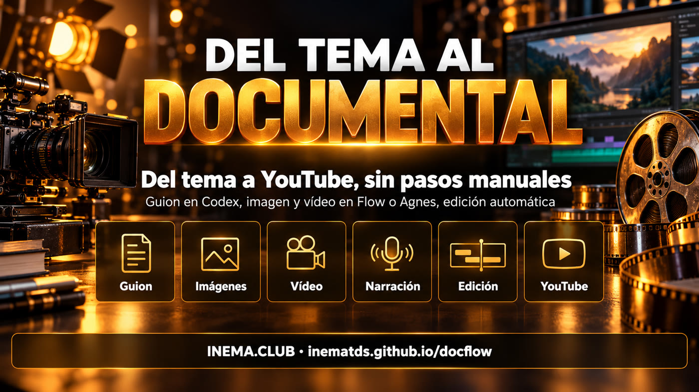

docflow es una herramienta de línea de comandos que crea documentales cortos narrados, del tipo que se usa en los canales "dark" de YouTube, donde no aparece nadie. Respondes 6 preguntas en un archivo (tema, estilo, duración, duración de cada escena, formato y referencias) y él hace el resto: escribe el guion, genera las imágenes y los videos de cada escena, narra, monta con música y transiciones y publica en YouTube. Recrea, de forma automática, un proceso que normalmente se hace a mano en ChatGPT, en Google Flow y en CapCut. Para usarlo, necesitas Linux con Python, ffmpeg y Codex.
Qué es
Un proceso manual de 6 etapas se convirtió en un comando
El punto de partida fue un tutorial de canal dark: GPT para el guion, Google Flow para imágenes y videos, AI Studio para la voz, Flow Music para la banda sonora, CapCut para el montaje y subida manual. docflow hace las mismas etapas solo.

📝 El "flow" del guion
Las mismas 6 preguntas del tutorial, respondidas en un archivo tema.yaml. Codex (con tu suscripción) devuelve guion, narración, prompts de imagen y de video numerados, prompt de música y título, descripción y etiquetas.
🔁 Motor intercambiable
La imagen y el video salen de Google Flow (automatizado en el navegador) o de la API de Agnes (imagen e imagen→video, US$ 0). La narración, el montaje y la publicación son iguales para los dos.
✂️ CapCut dentro de ffmpeg
Ajusta cada clip al tiempo del habla, pone transición entre escenas, fundido desde negro, sonido ambiente al 16% y música que baja sola cuando habla la voz. Después publica con yt-pubx.
Cómo funciona
Cinco etapas, cada una un comando
Todas se pueden repetir: rehacen solo lo que falta. El material queda numerado por escena en ~/projetos/output/docflow/<slug>/.
tema.yaml→guion (Codex)→generar (Flow o Agnes)→narrar (inemavox)→montar (ffmpeg)→publicar (yt-pubx)
A
Flow automatizado
Cuenta de Google. Un robot (Playwright) abre Flow, pega los bloques de prompts en el agente, aprueba, pide la colección y descarga el zip. Escrito, aún no validado: falta el primer inicio de sesión.
B
Codex + Agnes
Imágenes con agnes-image-2.1-flash y video con agnes-video-v2.0 (imagen→video), por API, a costo cero. Probado: hizo el video de ejemplo.
C
Local (planeado)
Sin API: flux2-klein para imagen e imagen con movimiento para video. Aún no está implementado.
Requisitos previos
Qué debe estar instalado
docflow orquesta herramientas que ya existen. Compruébalas antes del primer uso.
Python + ffmpeg
Python 3 con PyYAML para el orquestador y ffmpeg para el montaje.
Escribe el guion con tu suscripción. El modelo se puede cambiar con la variable DOCFLOW_CODEX_MODELO.
# comprobarcodex --version
Voz, imagen y YouTube
inemavox en línea (puerto 8010) para la narración, cliente Agnes de videos-agnes y yt-pubx con el canal autorizado. Para el motor Flow: Node + Playwright.
# comprobar~/projetos/yt-pubx/yt-pubx canais
Guía de uso · paso a paso
Del tema al video publicado
Ejemplo real: el video "Egipto Antiguo en un minuto", hecho con el motor Agnes.
1
Responde las 6 preguntas
Copia temas/egito.yaml y cambia el tema. 60 s de duración total con escenas de 10 s dan 6 escenas.
slug: egito-antigo
tema: "El Antiguo Egipto en un minuto: del Nilo a las pirámides..."estilo: "realistic cinematic documentary, natural golden light"duracao_total: 60
duracao_cena: 10
formato: "16:9"motor: agnes # flow | agnesvoz: nei
thumb_cena: 3 # imagen usada en la miniaturacanal: lives1
2
Ejecuta todo de una vez
Guion, imágenes, videos, narración y montaje. En el ejemplo tardó cerca de 9 minutos.
Motor Flow: el primer inicio de sesión (una sola vez)
El robot abre un Chromium en la pantalla virtual :99. Tú entras a la cuenta de Google por VNC (localhost:5900) y aceptas los términos de Flow. La primera ejecución calibra los botones, con una captura de cada paso en tmp/flow-*.png.
Las 6 imágenes generadas por la API de Agnes, una por escena: Nilo, unificación, Guiza, Nubia, Abu Simbel y Alejandría.La miniatura que yt-pubx armó a partir de la escena 3 (thumb_cena: 3).
Roadmap
Qué ya existe y qué viene
Versión 0.2.0.
Hecho
Motor Agnes, montaje y publicaciónVideo de ejemplo generado, revisado y publicado; descripción con pie automático.
Siguiente
Validar el motor FlowPrimer inicio de sesión de la cuenta de Google y calibración de los botones del agente de Flow.
Después
Voz y música desde el navegadorAI Studio TTS y Flow Music como motores, con el mismo robot.
Planeado
Camino localflux2-klein para imágenes e imagen con movimiento para video, sin ninguna API.